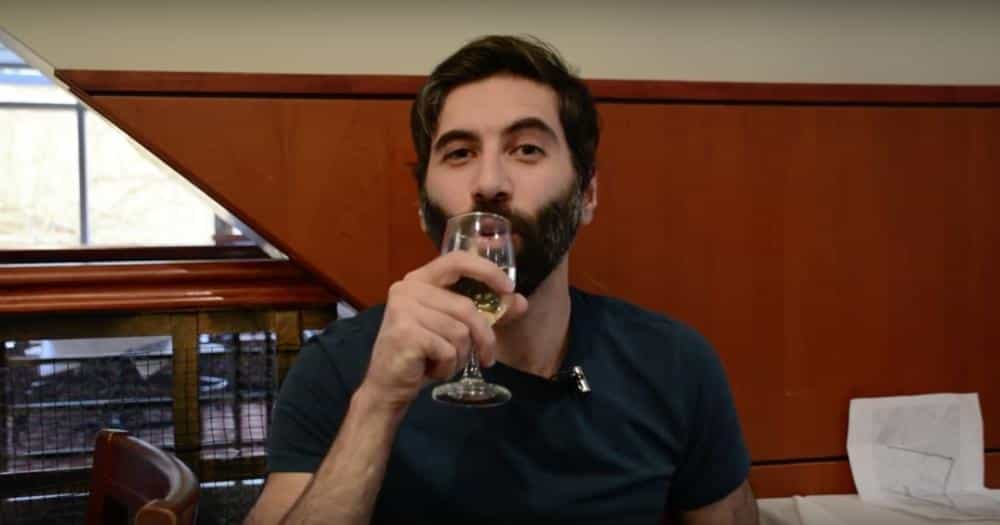
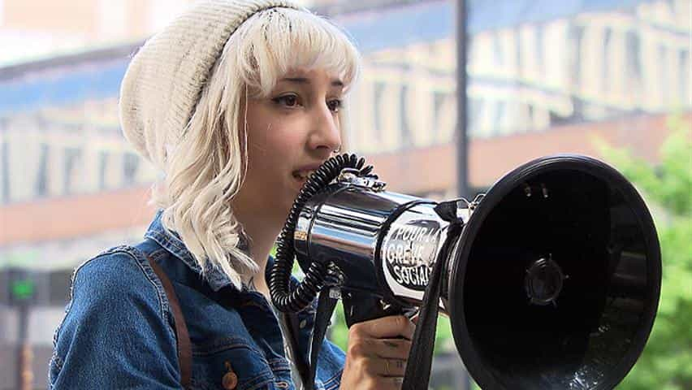
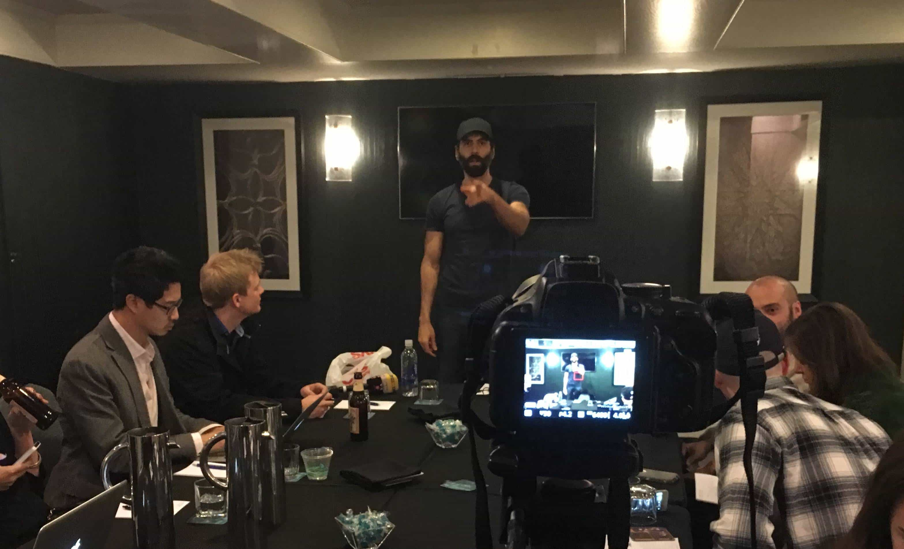

< < < Back
3 Things We Have Learned A Year After The Battle Of Canada – Return Of Kings
August marks the one year anniversary of Roosh and Return Of Kings‘ defiant stand against Canadian SJW violence and social terrorism. As part of his lecture tour across North America and Europe, Roosh expected the usual leftist opposition to his work, which this time consisted of giving speeches to fellow men about how to navigate a perilously anti-male Western world. What developed in Canada, however, soon surpassed all expectations.
Roosh’s planned lectures Montreal and Toronto were the catalyst, especially in the former city, for a wave of SJW and media lies, threats of violence, and, in the end, actual violence. Whilst the lectures took place at secret locations, we were left in no doubt that a number of crazy feminists, sympathetic pseudo-journalists, and even politicians did everything they could to endanger Roosh and get him thrown out of Canada.
So here the three biggest learnings from these pivotal days, which have become known as the Battle of Canada:
1. Media outlets and politicians need really good hyperbole to make people believe—and they failed miserably in Canada

Previous articles of mine have mentioned the so-called “CNN comments phenomenon.” Leftist media outlets like CNN and The Guardian, which form the majority of all “news” coverage, have plenty of narrative-guzzling fanboys and fangirls. All in all, though, surprisingly large numbers of readers and viewers refuse to take their biased journalist-dispensed medicine. Roosh’s Canadian stand was no exception.
Dozens of defamatory articles falsely accused Roosh of being pro-rape and organizing illegal harassment against feminists. Yet control of the predominant media narrative did not result in SJWs and their journalist enablers getting thousands, let alone tens of thousands of protesters out onto the streets against him in either Montreal or Toronto. It additionally failed to prevent Roosh from entering Canada (and there was much time to do so), failed to get him removed, and failed to stop the lectures in Montreal and Toronto.
For instance, when a Montreal café owner surreptitiously photographed Roosh and tried to organize another real-life lynch mob, the backlash against him and his establishment was significant. Irrespective of the depraved souls supporting the vilification of and violence against a paying customer, many people and even some media outlets called out such behavior for what it was: the condoning of violence and a desire to physically intimidate those you disagree with. Noted critics of Roosh, including Marni Soupcoff in The National Post, ended up rebuking the mentality of the SJWs trying to undermine Roosh’s lecture world tour.
SJWs also grossly overestimated the support they would get for violent acts, such as when a mob used assault and the threat of violence to falsely imprison Roosh in a building. Naturally, the mainstream media initially delighted in what occurred on this night in Montreal. But the coverage was ephemeral and instigators of the violence, including Katie B. Nelson and Jessica Lelièvre, either went underground on social media or tried to quickly delete comments linking them to the mob acts. Efforts to whip up hatred and physical confrontations with Roosh and his lecture attendees, as serious and malevolent as they were, fell far short of what SJWs and their media allies really wanted.
Then there was the array of compromised or plain pathetic local politicians trying to ride the anti-Roosh gravy train. Toronto Mayor John Tory, suffering from a serious case of relevance deprivation syndrome compared to the more well-known late Mayor Rob Ford, wanted to cash in on the free media attention to elevate his electoral prospects. Politically and arguably biologically senile Toronto Councillor Norm Kelly aimed for the same thing. The worst by far, however, was Ontario provincial parliamentarian Cheri DiNovo, a former drug smuggler, who expected that her anti-Roosh vitriol would help her later disastrous bid to become the national leader of her awful ultra-leftist party, the NDP.
All this thrown at Roosh, Return Of Kings and the lecture attendees… and the lectures still happened. If anything, what transpired in Canada raised Roosh’s profile ten times more than the lecture tour otherwise would have.
2. The Canadian media abandoned their mentally ill, criminally-inclined poster girls (and who can blame them?)

Jessica Lelièvre was the gift that kept on giving in ROK’s discrediting of the Canadian SJW rage.
Professional agitators and attention seekers Aurelie Nix and Katie B. Nelson represented the more mentally ill corner of the SJWs Roosh faced, while Nelson, Jessica Lelièvre and the mob of white knights in Montreal showcased the rather criminal side. At first, media outlets both inside and outside Canada were positively gleeful about the SJW violence and threats of violence, jovially covering the mob antics on the streets of Montreal especially. Even before organized violence was arranged, people like clearly inactive and unfulfilled, would-be schoolteacher Sara Parker-Toulson were praised as “heroines” for starting defamatory online petitions against Roosh. That said, serious cracks in the stories and backgrounds of the lead SJWs began to emerge.
Aurelie Nix in particular was a loose cannon and the Canadian media, who had ridiculously portrayed her as a victim, quietly dropped her “story.” For a start, she foolishly acted as if she had been the victim of “revenge porn,” decrying how links to publicly available nude photos she published online were shared. Secondly, she falsely and very slanderously claimed Roosh had made a rape threat against her, before insisting that the menace was actually coming from ROK supporters, an equally farcical assertion. Again, the supreme irony of Nix’s false allegations was that she is on record insisting that spurious sexual assault allegations against men are rare.
Plus, enough of the female SJWs were simply far too privileged for the media to continue using them. Assault-loving Jessica Lelièvre, now surprisingly studying to become a lawyer, was outed as a young woman with more privilege in her little finger than 98% of men have across their entire bodies. Her father owns a very profitable construction business, which he had inherited from his own father and grandfather. All three of these very white men have thus allowed poor Jessica to live the life of luxury she suffers today. Without even entering the full-time workforce (she was too busying criminally attacking Roosh), she has a property in the United States in her and her sister’s names, courtesy of her parents’ wealth. As you can imagine, my little violin just broke from over-playing.
Haley Yael Firkser, working in a cushy “business development director” job for her hardware store chain-owning father (with no normal qualifications for the position), was another anti-Roosh feminist who tried to court media attention. Presenting herself as a poor oppressed female at the mercy of the patriarchy, her glorification by the media was short-lived. Together with Katie B. Nelson, who must have had a very good way of supporting herself financially in between her violent acts towards police, history of drug abuse, and other forms of delinquency, Firkser underscored how women with too much time on their hands and an insufficient work ethic were leading the charge against Roosh. This did not make for a sustainable campaign by the media.
3. Armed with so many advantages, the SJWs and media backed down because of low energy and lack of conviction

Lacking sane poster girls, the Canadian media was forced to jettison liabilities like crackpot Aurelie Nix.
Media outlets such as CBC possessed an enviable arsenal with which to attack Roosh before, during and after his Canadian lectures. CBC alone is publicly funded to the tune of at least hundreds of millions of dollars annually and when all its financial sources are counted, it rakes in ten figures’ worth of revenues every year. And what about all the various private media corporations who went after Roosh in Canada?
Journalists are already infamous for being overwhelmingly liberal in their political outlook and whilst this did translate into a tidal wave of very unprofessional and false ad hominem attacks against Roosh, the lack of success against him meant the targeted media hate eventually sputtered. Writers paid to vilify him and Return Of Kings went for cheap attacks that at best barely scratched the surface of why his world tour was taking place.
Canadian media outlets have spent an inordinate of time trying to legitimize infantile, preposterous theories like “rape culture,” but cannot explain why, if this culture supposedly exists, those (falsely) called “rape advocates” by feminists and journalists are invariably the recipients of violence, threats, and very organized campaigns to remove them from particular jurisdictions. This is the kind of glaring inconsistency that CBC and other platforms could never really touch on in dealing with Roosh, lest the flimsy facade of “society institutionally oppresses women” fall away. Superficial broadsides fired at Roosh were one-dimensional and soon crumbled.
Another big reason for the death of the anti-Roosh campaign was an unwillingness or inability of the journalists to critique Roosh’s own points in detail. Roosh’s lecture world tour argued that men were being silenced throughout the Western world and the nature of the media crusade, used as it was to inflame SJW violence, proved this very argument. Convinced that the world should be a particular way, the journalists and crazy feminists involved in the public hate did very little to appropriately explain their positions and rationalize how Roosh’s were wrong. Once the initial fury had subsided, there was little else they could do except retreat and forget their campaign occurred.
The SJW hate and violence will reemerge

Just six months after the Canadian hate, Roosh faced another targeted campaign against the ROK meet-ups.
The sensationalized and patently false stories about the ROK meet-ups at the start of this year illustrate how Canada-style hate campaigns against us will continue to appear. Inasmuch as I have pointed to a lack of persistence from our SJW and media enemies, we should not underestimate the risks to Roosh and others in the crucial days when SJWs resort to serious threats and violence. The type of mob that tried to seriously injure or kill Roosh in Montreal can and almost certainly will materialize again.
Despite the deranged groups, media interests, and political ideologies who desire our demise, the lectures Roosh gave in Canada and the extraordinarily hostile environment in which they took place constituted a significant victory. The danger was real, but the message was delivered loud and clear.
With the publication of Roosh’s book about his Canadian experiences, Free Speech Isn’t Free, thousands of new men will be positively introduced to both him and Return Of Kings. And that’s an outcome SJWs did not anticipate when they tried to take Roosh down in Canada–and failed to do so.
 If you like this article and are concerned about the future of the Western world, check out Roosh's book Free Speech Isn't Free. It gives an inside look to how the globalist establishment is attempting to marginalize masculine men with a leftist agenda that promotes censorship, feminism, and sterility. It also shares key knowledge and tools that you can use to defend yourself against social justice attacks. Click here to learn more about the book. Your support will help maintain our operation.
If you like this article and are concerned about the future of the Western world, check out Roosh's book Free Speech Isn't Free. It gives an inside look to how the globalist establishment is attempting to marginalize masculine men with a leftist agenda that promotes censorship, feminism, and sterility. It also shares key knowledge and tools that you can use to defend yourself against social justice attacks. Click here to learn more about the book. Your support will help maintain our operation.
Read More: Sex With Animals Is Now Legal In Canada But Speaking Your Mind Leads To Persecution